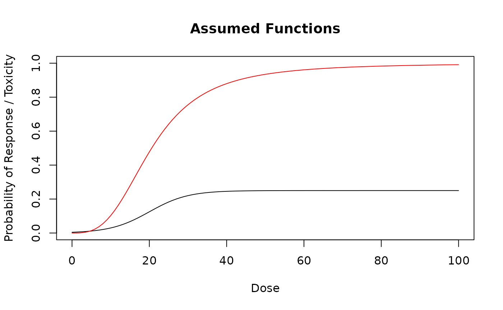
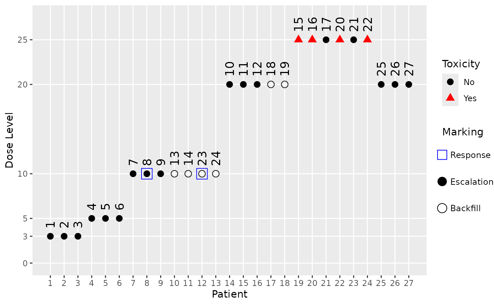

Introduction
Backfilling cohorts are increasingly used in dose escalation studies, see Barnett et al. (2023). The idea is that once a dose level has been tested and found to be safe, then while the dose escalation continues at higher dose levels, additional patients can be enrolled at the lower dose levels to gather more data on safety and/or efficacy. This is particularly useful in trials where patient recruitment is slow or when there is a need to gather more information on lower dose levels for regulatory or clinical reasons.
Sometimes health authorities are asking to include the backfilling cohorts in the simulations to check the operating characteristics (especially PMDA). In addition, it is useful to get more precise operating characteristics for the overall trial by actually simulating the backfilling cohorts, when they are part of the actual clinical trial design.
Hence, with crmPack it is now possible to include
backfilling cohorts in the simulations. This vignette illustrates how to
do this.
Framework
Conceptually the backfilling details are part of the design of a
trial. Therefore the details are included via a dedicated slot
backfill in the Design class. It contains an
object of class Backfill, which captures these details via
the following slots:
-
cohort_size: How large are the backfilling cohorts? Here an object of classCohortSizeis used. -
max_size: What is the overall maximum number of patients across all backfill cohorts? -
opening: When can a backfill cohort be opened or recruited into? Here an object of a newOpeningrules class is used. These rules can be based on e.g. dose level, current highest/maximum safe dose, efficacy responses, etc. -
recruitment: How fast can patients be recruited into backfill cohorts? Here an object of a newRecruitmentclass is used. You can choose between immediate recruitment vs. a ratio compared to active dose escalation cohort (e.g. when active cohort has 3 patients recruited then here only 1/3 so 1 patient per cycle to backfill cohorts). -
priority: When there are multiple open backfill cohorts, which one should be recruited into first? Here a simple string is used to specify the priority rule (first “lowest” dose, first “highest” dose, or “random”).
Additional parts of the backfill cohort framework comprise:
- The
Dataobjects have a slotbackfilledidentifying whether each patient was backfilled or not, and the slotresponseidentifies whether each patient had a response (1) or not (0). When these are not actively set by the user, then they default to no patients backfilled (allFALSE) and no response data available (allNA). - Some
Stoppingrules can optionally exclude backfill patients for assessing whether a trial can be stopped or not. This is currently the case for theStoppingPatientsNearDoserule.
Algorithm
For reference, we describe the algorithm used in the
simulate method for Design objects to include
backfilling cohorts:
- Backfilling is only possible if the
openingis not anOpeningNoneobject. Otherwise no backfilling is done in any of the trial simulations. - A queue of open backfill cohorts is maintained, and it is initialized as empty at the start of the trial. Likewise, the total number of backfill patients recruited so far is initialized to zero.
- Throughout the trial simulations, for each patient next to the toxicity outcome, in addition also the binary response is simulated according to the assumed dose-response probability function (note that placebo patients can also have a response in principle, according to the placebo dose used in the dose grid).
- After each dose escalation cohort is completed (i.e. all patients in
the cohort have their toxicity and response outcomes observed), the
backfill queue is updated:
- First, for all of the previous cohorts in the trial we check whether
a backfill cohort can be opened, or can stay open (in case it was
already open). This is done by applying the
openingrules to each cohort in turn, in combination with comparing the cohort’s dose with the current dose: It is a strict requirement that only cohorts with doses below the current dose can be open for backfilling (as the name suggests already). - If a cohort is already in the backfill queue, we first check whether it is full already (maximum number of backfill patients in this particular queue has been reached). If we can open it and it is not full, then it is opened or remains open. If it is full, it remains closed. If we cannot open it, then it is closed (if it was open before), but still remains in the queue for record keeping.
- If a cohort is not yet in the backfill queue and we can open it,
then it is added to the backfill queue. The maximum size of each
backfill cohort is determined by the
sizerule.
- First, for all of the previous cohorts in the trial we check whether
a backfill cohort can be opened, or can stay open (in case it was
already open). This is done by applying the
- After updating the backfill queue, the number of patients which can
be enrolled in this dose cycle into backfill cohorts is determined
according to the
recruitmentrule and themax_sizelimit for the overall number of backfill patients. If there are no backfill patients which can be recruited, then we continue with the next dose escalation cohort. - Assuming that we can recruit backfill patients, the cohorts from the
backfill queue are sorted according to the
priorityoption. Then patients are recruited into the open backfill cohorts in this order (filling up as many as possible patients for each cohort), until either all possible backfill patients for this cycle have been recruited, or all open backfill cohorts are full. - Backfill cohorts which have reached their maximum size are closed (i.e. they cannot be recruited into anymore), but they remain in the backfill queue for record keeping.
- After recruiting any backfilling patients, the trial simulation continues with determining the maximum increment, fitting the regression model, selecting the next dose, checking stopping rules, as usual. Note that toxicity outcomes from backfill patients are deliberately included in the model fitting and dose selection, to reflect the actual data situation in the trial.
Examples
Standard components
We start with the standard components of a CRM design, which are not
changed by the backfilling framework - except that for the
StoppingPatientsNearDose rule we can now choose whether to
include backfill patients or not.
library(crmPack)
#> Loading required package: ggplot2
#> Registered S3 method overwritten by 'crmPack':
#> method from
#> print.gtable gtable
#> Type crmPackHelp() to open help browser
#> Type crmPackExample() to open example
# Define the dose-grid.
emptydata <- Data(
doseGrid = c(0.1, 0.2, 0.5, 1, 3, 5, 10, 15, 20, 25, 40, 50, 60, 70, 80, 100)
)
# Define the dose-toxicity model.
model <- LogisticLogNormal(
mean = c(-0.85, 1),
cov = matrix(c(5, -0.5, -0.5, 5), nrow = 2),
ref_dose = 56
)
# Choose the rule for selecting the next dose.
myNextBest <- NextBestNCRM(
target = c(0.2, 0.35),
overdose = c(0.35, 1),
max_overdose_prob = 0.25
)
# Choose the rule for stopping.
myStopping1 <- StoppingMinCohorts(nCohorts = 3)
myStopping2 <- StoppingTargetProb(
target = c(0.2, 0.35),
prob = 0.5
)
myStopping3 <- StoppingMinPatients(nPatients = 40)
myStopping4 <- StoppingPatientsNearDose(nPatients = 10L, percentage = 30, include_backfill = FALSE)
myStopping <- (myStopping1 & myStopping2 & myStopping4) |
myStopping3 |
StoppingMissingDose()
# Choose the rule for dose increments.
myIncrements <- IncrementsRelative(
intervals = c(0, 20, 50),
increments = c(1, 0.67, 0.33)
)No backfill cohorts
First we can define a design without backfill cohorts, which is the default behaviour when no backfill details are specified:
design_no_backfill <- Design(
model = model,
nextBest = myNextBest,
stopping = myStopping,
increments = myIncrements,
cohort_size = CohortSizeConst(3),
data = emptydata,
startingDose = 3
)
design_no_backfill@backfillNo backfill cohorts at all will be opened.
Note: This concise statement is produced by dedicated
knit_printmethods for theBackfillclass, which help with the consistent reporting ofcrmPackdesign details in vignettes and reports.
Simple backfill cohorts
Let’s continue with the simplest case of backfill cohorts. Here we define backfill cohorts of size 3 patients each, with a maximum of 12 backfill patients in total. Backfill cohorts can be opened at any time (i.e. immediately), and recruitment into backfill cohorts is immediate (i.e. as fast as dose escalation cohorts). When multiple backfill cohorts are open, then the lowest dose level is recruited into first.
backfill_simple <- Backfill(
cohort_size = CohortSizeConst(3),
max_size = 12,
opening = OpeningMinCohorts(min_cohorts = 1),
recruitment = RecruitmentUnlimited(),
priority = "lowest"
)
backfill_simpleCohort size: A constant size of 3 participants.
Opening rule: If 1 or more cohorts have been treated in total.
Recruitment: Unlimited recruitment of backfill patients is allowed.
Total number of backfill patients: 12 backfill patients.
Priority of higher vs. lower dose backfill cohorts: lowest dose.
We can now add this backfill specification to the design:
design_simple_backfill <- design_no_backfill
design_simple_backfill@backfill <- backfill_simpleMore complex backfill cohorts
Now let’s make things a bit more complex. We define a random number
of patients for each backfill cohort, with a minimum of 1 patient and a
maximum of 6 patients. Backfill cohorts can only be opened once at least
3 dose escalation cohorts have been completed. Note that this will lead
to a delayed opening of cohorts 1, 2, and 3 for simultaneous
backfilling. In addition, at least one response must have been observed
at the cohort’s dose level or a lower dose level before it could be
opened for backfill. For example, if there is no response observed in
cohort 1 at the lowest dose level, then it will not be opened for
backfilling at all. We will be able to specify the assumed dose-response
probability function in the simulate method call later.
Recruitment into backfill cohorts is slower than dose escalation
cohorts, with a ratio of 1 backfill patient for every 2 dose escalation
patients. When multiple backfill cohorts are open, then the highest dose
level is recruited into first. The total maximum number of backfill
patients is set to 20.
backfill_complex <- Backfill(
cohort_size = CohortSizeRandom(min_size = 1, max_size = 6),
opening = OpeningMinCohorts(min_cohorts = 3) &
OpeningMinResponses(
min_responses = 1,
include_lower_doses = TRUE
),
recruitment = RecruitmentRatio(ratio = 1 / 2),
priority = "highest",
max_size = 20
)
backfill_complexCohort size: A random cohort size drawn uniformly between 1 and 6 participants.
Opening rule: If both of the following rules are satisfied:
If 3 or more cohorts have been treated in total.
If 1 or more responses have been observed at this dose or lower.
Recruitment: Backfill patients are recruited at a ratio of 0.5 per patient in the main trial cohort.
Total number of backfill patients: 20 backfill patients.
Priority of higher vs. lower dose backfill cohorts: highest dose.
Note how we can combine multiple opening rules using the
& operator. This is analogous to how stopping rules can
be combined. Indeed, it is also possible to use the |
operator to combine opening rules with an “or” logic.
Again we add this backfill specification to the design:
design_complex_backfill <- design_no_backfill
design_complex_backfill@backfill <- backfill_complexSimulations with backfill cohorts
Now we can run trial simulations including backfill cohorts. Here we illustrate this with both the simple and the complex backfill cohort designs defined above. For the complex backfill design we also need to specify the assumed dose-response probability function. Similarly as for the dose-toxicity function, it might be worth to consider a few different scenarios in practice.
# Assumed dose-response probability function.
mytruthResponse <- function(dose) {
plogis(- 4 + 0.2 * dose) / 4
}
curve(mytruthResponse(x), from = 0, to = max(emptydata@doseGrid),
xlab = "Dose", ylab = "Probability of Response / Toxicity",
main = "Assumed Functions", ylim = c(0, 1))
myTruth <- probFunction(design_simple_backfill@model, alpha0 = 3, alpha1 = 3)
curve(myTruth(x), from = 0, to = max(emptydata@doseGrid),
add = TRUE, col = "red")
Now we can run the simulations for this particular scenario:
# For real applications, use e.g. McmcOptions() with defaults.
mcmcOptions <- McmcOptions(
burnin = 10,
step = 1,
samples = 100,
rng_kind = "Mersenne-Twister",
rng_seed = 12345
)
# Simple backfill design simulation:
sims_simple <- simulate(
design_simple_backfill,
truth = myTruth,
nsim = 10, # For real applications, increase to 1000 e.g.
seed = 819,
mcmcOptions = mcmcOptions,
parallel = FALSE,
firstSeparate = FALSE
)
# Complex backfill design simulation:
sims_complex <- simulate(
design_complex_backfill,
truth = myTruth,
truthResponse = mytruthResponse,
nsim = 10, # For real applications, increase to 1000 e.g
seed = 819,
mcmcOptions = mcmcOptions,
parallel = FALSE,
firstSeparate = FALSE
)We can see that it is still very simple and straightforward to run simulations including backfill cohorts.
Investigating single trial data
The data for each simulated trial is available in the list in the
data slot of the returned Simulations object,
and we can also plot it.
For example, the 3rd simulated trial with the simple backfill design looks like this:
plot(sims_simple@data[[3]], mark_backfill = TRUE)
We can see from the patient IDs, which are assigned sequentially in time, when the backfill patients were recruited (those with an empty shape). For example, we see that the highest dose which was backfilled is 15, after which the maximum of 12 backfill patients was reached.
Similarly we can also plot the data from a simulated trial with the complex backfill design. Here we show the 5th simulated trial, and because the backfill cohort rule is also based on responses, we also mark the response data (using blue squares around the points with a response):
plot(sims_complex@data[[5]], mark_backfill = TRUE, mark_response = TRUE)
Here we can see that the starting dose cohort at dose 3 as well as the next one at dose 5 did not produce any responses, hence no backfill cohorts could be opened at these dose levels. Only after dose escalation reached dose 10 in cohort 3 and two responses were observed there, a backfill cohort could be started there and at the higher dose 20 (because we assumed a monotone dose-response relationship, and include lower doses in our response assessment in the backfill cohort opening rule).
Investigating simulation results
We can do some manual investigations of the simulation results to see how many backfill patients were recruited in each simulation:
get_backfill_counts <- function(sims) {
sapply(sims@data, \(d) sum(d@backfilled))
}
backfill_counts_simple <- get_backfill_counts(sims_simple)
backfill_counts_complex <- get_backfill_counts(sims_complex)
table(backfill_counts_simple)
#> backfill_counts_simple
#> 9 12
#> 1 9
table(backfill_counts_complex)
#> backfill_counts_complex
#> 0 2 3 6 10
#> 6 1 1 1 1So we see that for all except one simulation in the simple design, the maximum number of 12 backfill patients was recruited. For the 10 simulations of the complex design the situation is more varied: In 6 of the 10 simulations no backfill patients were recruited at all e.g., but in some including the trial no. 5 we looked at above we saw 6 or more backfill patients.
Let’s also look at the dose distribution of the backfill patients. We can extract the backfill doses from each simulated trial like this:
get_backfill_doses <- function(sims) {
lapply(sims@data, \(d) d@x[d@backfilled])
}
backfill_doses_simple <- get_backfill_doses(sims_simple)
backfill_doses_complex <- get_backfill_doses(sims_complex)For example, the first 3 trials simulated with the simple backfill design had the following backfill doses:
head(backfill_doses_simple, 3)
#> [[1]]
#> [1] 3 3 3 5 5 5 10 10 10 10 10 10
#>
#> [[2]]
#> [1] 3 3 3 5 5 5 10 10 10 15 15 15
#>
#> [[3]]
#> [1] 3 3 3 5 5 5 10 10 10 15 15 15We can e.g. create a table showing the distribution of the backfill doses across all simulations:
all_backfill_doses_simple <- unlist(backfill_doses_simple)
table(all_backfill_doses_simple)
#> all_backfill_doses_simple
#> 3 5 10 15
#> 30 30 42 15
all_backfill_doses_complex <- unlist(backfill_doses_complex)
table(all_backfill_doses_complex)
#> all_backfill_doses_complex
#> 10 15 20
#> 14 3 4So we see e.g. that all backfill patients in the complex design were recruited at doses 10, 15, 20.
We can also get basic summary statistics with the
summary method for Simulations objects:
summary(sims_simple, truth = myTruth)
#> Summary of 10 simulations
#>
#> Target toxicity interval was 20, 35 %
#> Target dose interval corresponding to this was 13, 16.8
#> Intervals are corresponding to 10 and 90 % quantiles
#>
#> Number of patients overall : mean 37 (33, 42)
#> Number of patients treated above target tox interval : mean 7 (3, 9)
#> Proportions of DLTs in the trials : mean 16 % (12 %, 20 %)
#> Mean toxicity risks for the patients on active : mean 19 % (16 %, 22 %)
#> Doses selected as MTD : mean 18 (15, 20)
#> True toxicity at doses selected : mean 40 % (28 %, 48 %)
#> Proportion of trials selecting target MTD: 40 %
#> Dose most often selected as MTD: 20
#> Observed toxicity rate at dose most often selected: 50 %
#> Number of backfill patients : mean 12 (12, 12)
#> Doses for backfill patients: 3: 25.6%, 5: 25.6%, 10: 35.9%, 15: 12.8%
#> Fitted toxicity rate at dose most often selected : mean 31 % (25 %, 39 %)
#> Stop reason triggered:
#> ≥ 3 cohorts dosed : 100 %
#> P(0.2 ≤ prob(DLE | NBD) ≤ 0.35) ≥ 0.5 : 100 %
#> ≥ 10 patients dosed in 30 % dose range around NBD : 90 %
#> ≥ 40 patients dosed : 30 %
#> Stopped because of missing dose : 0 %If backfill cohorts are used in the design, and there are actually backfill patients in any of the simulated trials then we see:
- The number of backfill patients recruited across the simulations (average, 10% and 90% quantiles in parentheses).
- The dose levels at which backfill patients were recruited (doses with percentages across all cohorts and all simulations).
Limitations
Note that the examine method does not include backfill
cohorts, because he examination paths would get too complex to
understand easily. In addition, it seems not needed to include backfill
cohorts for the quick check for which the examine method is
intended.
Currently the backfill cohort simulation is supported only for
standard Design objects. It is not supported for
DADesign or DualDesign objects, although these
inherit from the Design class. This is because these more
complex designs have additional complexities that need to be addressed
before backfilling can be supported. We plan to implement backfill
cohort simulation for these, and potentially other design classes, in
future releases of crmPack, depending on the demand from
users.
Backwards Compatibility
We have looked into the S4 class framework details and it is a known
issue that when we add new slots to existing classes, and then load old
saved objects of this class without this slot, then these objects will
not be usable. In Bioconductor they even created a special package
updateObject to deal with this issue (see here
for details).
We think that this is not warranted in our case, because typically
the code for running simulations and analyses is retained by users of
crmPack. Therefore it is best to rerun this code with the
new package version including the additional slots.